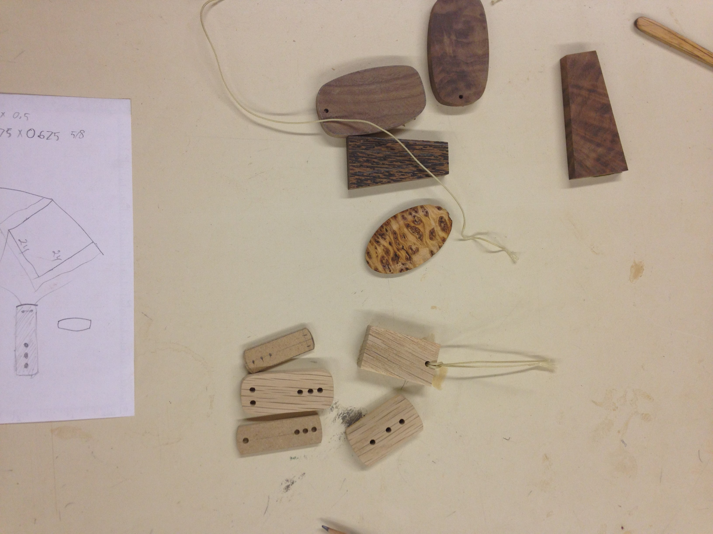
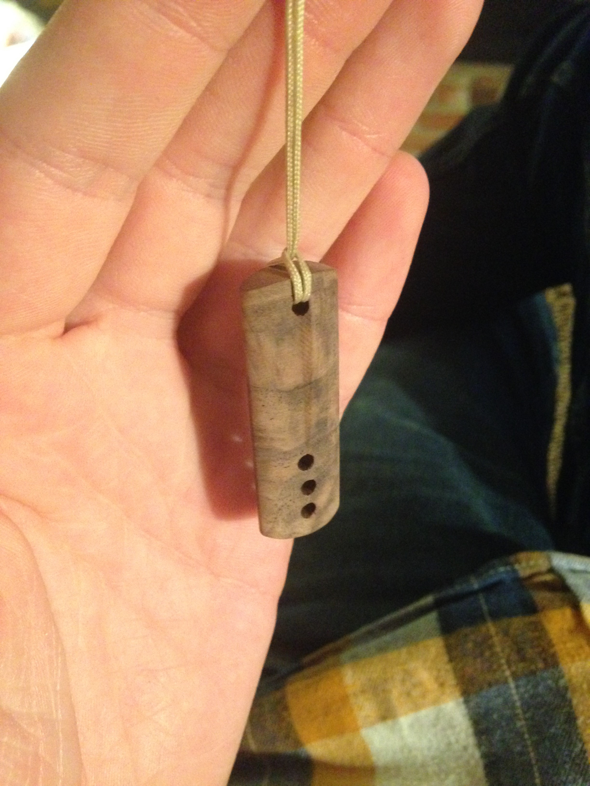

The same summer that I build the earth oven I had the opportunity to work with Kees Luchs in his shop near Nanaimo BC I had a great time working and living with Kees making wooden jewelry among other projects. Near the end of my stay there I decided to try a project of my own. I always love projects that combine wood and metal, so I decided to make a walnut necklace with inlayed brass pins.
Playing around with the shape
Final shape. This is actually a picture of one I scrapped because some dust got behind the fence on the drillpress so one hole was out of line. I started with a flat rectangle, drilled all 4 holes, then shaped it on the disk sander. Next I made the 3 inlays out of brass rod and fit them in the holes with epoxy.
Here’s the finished necklace with a buffed oil finish.
And here's the shop I made it in!